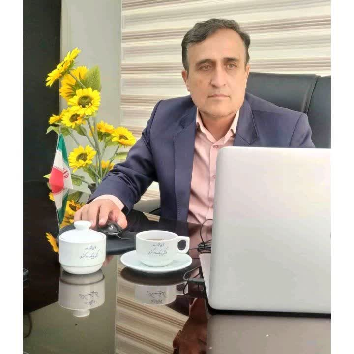

پروندههای حقوقی
بررسی اختلافات حقوقی، مدارک و پیگیری موضوع در مراجع ذیصلاح.
هادی مختارزاده، وکیل پایه یک دادگستری و مشاور حقوقی، با سابقه فعالیت در پروندههای حقوقی و مالی، آماده بررسی موضوعات حقوقی در چارچوب قوانین و مقررات است.

هادی مختارزاده، وکیل پایه یک دادگستری و مشاور حقوقی، دارای مدرک کارشناسی ارشد حقوق خصوصی و عضو مرکز وکلای خراسان رضوی است. سوابق اعلامشده ایشان شامل فعالیت در پروندههای مالی و بانکی و مسئولیت در شورای حل اختلاف است.
بررسی هر پرونده به مدارک، مستندات و شرایط اختصاصی آن وابسته است. برای ارزیابی دقیقتر موضوع، میتوانید با دفتر تماس بگیرید و درباره امکان پیگیری پرونده پرسوجو کنید.
بررسی اختلافات حقوقی، مدارک و پیگیری موضوع در مراجع ذیصلاح.
بررسی مستندات مالی، مطالبات و تعهدات قراردادی.
مطالعه مفاد قراردادها و بررسی تعهدات طرفین.
راهنمایی درباره مسیرهای قانونی و حقوق و تکالیف اشخاص.
بررسی موضوعات حقوقی مرتبط با پروندههای بانکی و اسناد مالی.
مرور اولیه مدارک و مشخصکردن نکات نیازمند بررسی حقوقی.
معرفی حوزههای فعالیت به معنی تضمین نتیجه یا پذیرش هر پرونده نیست. امکان ارائه خدمات پس از بررسی موضوع و توافق با دفتر مشخص میشود.
سابقه پیگیری بیش از ۱۰۰۰ پرونده مالی، بر اساس اطلاعات ارائهشده.
سابقه فعالیت حقوقی برای یکی از شعب پستبانک در خراسان رضوی.
چهار سال سابقه ریاست یکی از شعب شورای حل اختلاف.
سابقه فعالیت حقوقی برای بیمه کشاورزان.
برای هماهنگی مراجعه یا پرسوجو درباره امکان بررسی پرونده، از اطلاعات زیر استفاده کنید.
تماس با دفتر
در حال دریافت دیدگاهها...